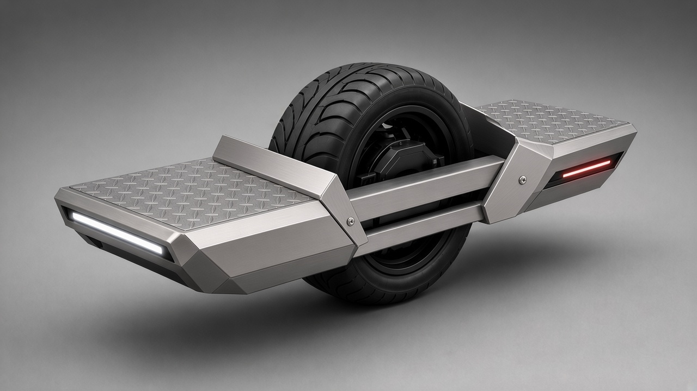
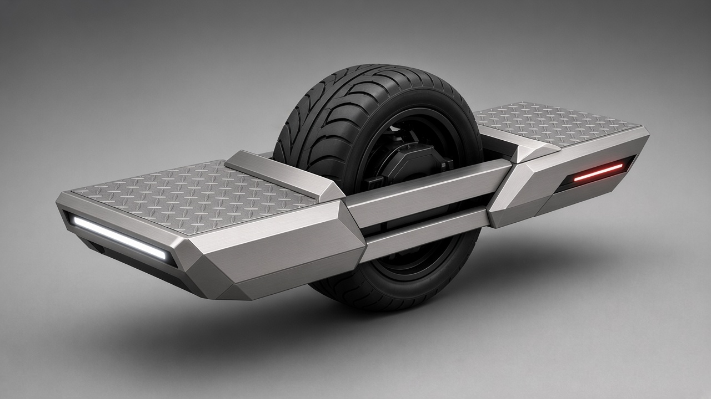
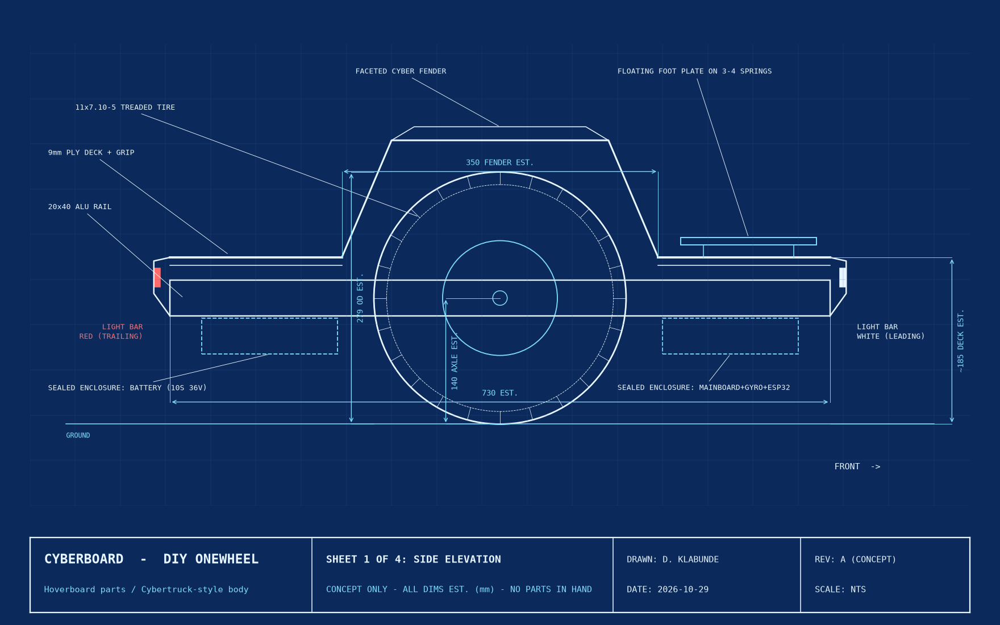
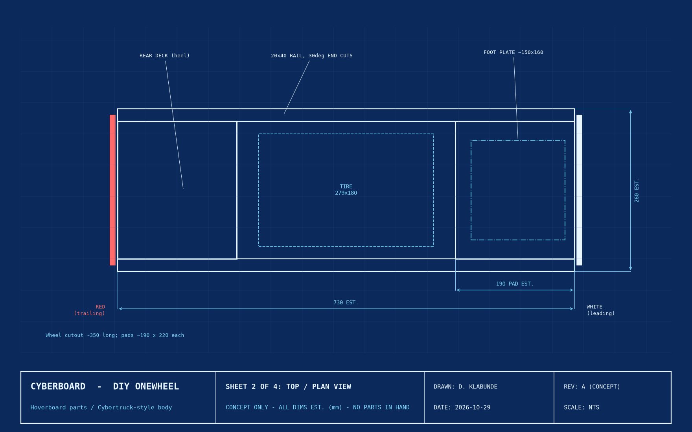
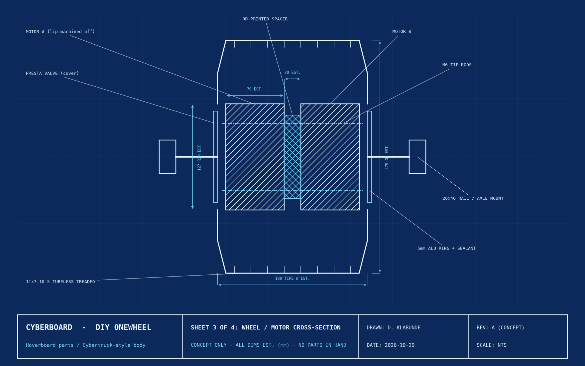
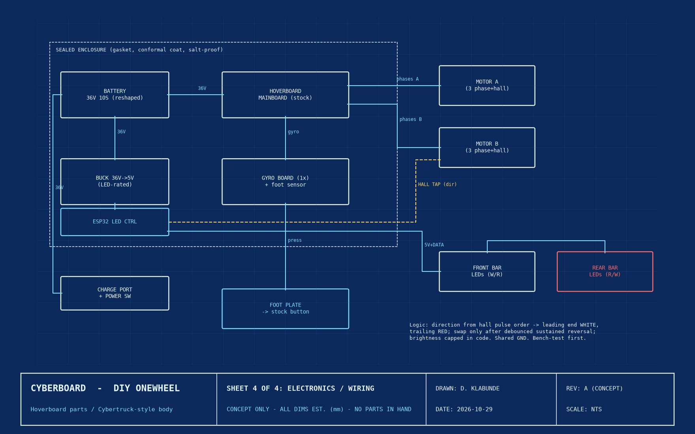
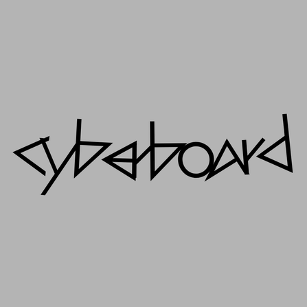

← CyberBoard overview · All projects
CyberBoard: engineering deep dive
A DIY angular one-wheel electric board built from a used hoverboard.
Lead designer & builder · Oct 2026 – present
Status
In progress · Design phase. No parts in hand yet: all dimensions are estimates (EST.) until the donor hoverboard is measured. No tests have been run.
Problem & goal
Build a rideable single-wheel (Onewheel-style) board from a used hoverboard, with an angular, Cybertruck-inspired brushed-metal look and direction-aware LED lighting, for $150–200 total using basic tools.
Requirements
| ID | Requirement | Source / reason |
|---|---|---|
| R1 | Total build cost ≤ $150–200 | Budget set by me |
| R2 | Reuse a 6.5" 36V (10S) hoverboard: motors, battery, charger, mainboard, gyro board | Cost; reference build uses stock electronics |
| R3 | 11x7.10-5 tubeless treaded tire, tire only (the motors act as the rim); buy single or pair only | Grip on wet roads and snow |
| R4 | Sealed, salt-proof electronics: gasketed lid, cable glands, conformal coating | Follows from riding in wet/snow |
| R5 | Leading-end light white, trailing-end red; swap only after a sustained reversal | Visibility; no flicker near standstill |
| R6 | Fast access to the avionics: top deck plates come off with a few screws into rivet nuts/threaded inserts | Serviceability (top priority) |
| R7 | Quick-disconnect wiring (e.g. XT60 battery, JST/Dupont signals); no permanent adhesive on serviced parts; wheel drops out via axle clamp bolts | Serviceability |
| R8 | Printed parts fit ~220×220 mm bed, PLA; CAD in FreeCAD, deliver STEP + STL | Available tools |
| R9 | Rider-detect stays on the stock, proven circuit | Safety-critical |
Parameters & constraints (Rev A, estimated)
All values EST. from the reference build and Rev A concept sheets. To be replaced by measured values in Rev B.
| Parameter | Value | Status |
|---|---|---|
| Overall length | 730 mm (2× 20×40 mm aluminum rails, 30° cuts) | EST. |
| Width | 260 mm | EST. |
| Tire | 11x7.10-5 tubeless, treaded · ~279 mm OD × ~180 mm wide | Spec chosen; dims EST. |
| Rim | Two hub motors, ~127 mm (5") dia, ~70 mm wide each + ~20 mm spacer | EST. |
| Axle height | ~140 mm | EST. |
| Deck top height | ~185 mm from ground | EST. |
| Foot pads | ~190 × 220 mm each | EST. |
| Foot trigger plate | ~150 × 160 mm | EST. |
| Deck material | 1/8" (3.2 mm) aluminum diamond plate (likely 3003), grip tape | Decided |
| Battery | 36V 10S Li-ion (stock hoverboard pack) | Standard for class; confirm on donor |
| Motors | 2× hub motors, typically 250–350 W each | Typical; donor not measured |
| Logic power | 36V → 5V buck converter sized to LED current; brightness capped in code | Part TBD |
| LEDs | SEZO 144/m addressable strips | Chosen |
| Lighting MCU | ESP32 (or Arduino Nano) | Chosen |
| Weight, top speed, range | TBD | Not yet tested |
System architecture
Mechanical
- Two aluminum 20×40 mm rails form the frame; the hoverboard's axle-mount adapter is cut in half and reused, with M8 bolts
- Wheel: two hub motors bolted side by side (M6 rods + 3D-printed spacer) with the rim lip machined off; sides sealed with automotive sealant and a 5 mm aluminum ring; Presta valve tapped into a motor cover
- Decks: 1/8" aluminum diamond plate, screwed into rivet nuts so they lift off for service
- Splash guards: thin (~1/16") bent sheet-aluminum guards, 2–3" tall, at each wheel cutout edge (full fender dropped)
- Printed parts (MakerWorld kit: spacers, bumpers, gyro activator cap, gyro mounting template; PLA ~549 g, ~16 h)
Electrical & power
- Stock 36V pack, mainboard and one gyro board; the gyro input is rewired so a single gyro drives both motors (no custom firmware)
- 36V → 5V buck converter feeds the ESP32 and LED strips
- Battery under the rear deck; mainboard, gyro and ESP32 under the front deck, in sealed enclosures
- Cold weather: expect reduced output and range; do not charge below 0 °C
Control & sensors
- Primary direction sensing: tap one hub motor's hall sensor lines; pulse order gives forward vs reverse
- Backup: MPU6050 IMU (noisier, because the board is always tilting)
- Hysteresis/debounce so colors swap only after a sustained reversal
- Rider detect: floating foot plate on 3–4 springs or rubber bumpers presses the stock foot button; stock wiring and logic kept
Bill of materials (planned)
Nothing purchased yet except as noted. Prices are listing prices seen on 2026-10-29, not final costs.
| Item | Choice | Est. cost | Status |
|---|---|---|---|
| Donor hoverboard | Used 6.5" 36V board, local pickup (shortlist $30–40) | $30–40 | Seller contacted |
| Tire | 11x7.10-5 tubeless treaded (cheapest tread-confirmed listing $64.06) | ~$64 | Order after board arrives |
| Lighting | ESP32/Nano, hall tap, buck converter, LED strips | ~$10–15 | Planned |
| Frame rails | 2× 20×40 mm aluminum, 730 mm | TBD | Planned |
| Decks | 1/8" aluminum diamond plate, 24×24 in sheet | TBD | Planned |
| Guards | ~1/16" aluminum sheet | TBD | Planned |
| Fasteners | Rivet nuts/inserts, M5/M6 hex, M8 bolts, M6 rod | TBD | Planned |
| Printed parts | PLA, ~549 g | TBD | Planned |
| Total | TBD (target $150–200) |
Design decisions
| Decision | Alternatives considered | Choice & rationale |
|---|---|---|
| Donor drivetrain | Buy motor/controller/battery separately | Reuse a used hoverboard: far cheaper; tied to stock electronics |
| Donor source | New 6.5" boards $99–130; eBay used (mostly parts) | Used local board $15–45: keeps budget; must be tested |
| Wheel | Tire + rim kit | Tire only; the two motors are the rim, so a rim is wasted money |
| Tread | Slick ($29.79–39.99) | Treaded: wet and snow grip; costs more; ice still needs studs |
| Firmware | hoverboard-firmware-hack-FOC | Stock electronics, one gyro rewired: proven in the reference build, less risk |
| Foot trigger | FSR / force sensor | Spring-mounted plate pressing the stock button: no new electronics in the safety-critical circuit |
| Direction sensing | MPU6050 IMU | Hall sensor tap primary (cleaner signal); IMU kept as backup |
| Deck material | 9 mm plywood (needs sealing), PVC (brittle in cold), HDPE/polycarbonate (flexy), G10 (expensive) | 1/8" aluminum diamond plate: stiff, weatherproof, available locally |
| Avionics access | Dedicated hatch with captive/quarter-turn fasteners | Removable top plates with screws into rivet nuts: simpler, threads survive repeated removal |
| Fender | Full fender; short 1–2" wedge guards | Thin 2–3" bent sheet-aluminum guards: keep the look, still catch debris |
| Cosmetic marble slab | Slab | Scrapped: heavy, brittle, cosmetic only |
Timeline (all on 2026-10-29)
| Time (ET) | Work |
|---|---|
| Morning | Kickoff; reviewed reference build video, motor video and MakerWorld kit (original written guide was offline) |
| — | Specs set: 11x7.10-5 tubeless tire only; 6.5" 36V donor; treaded tire chosen; $150–200 budget |
| 2:05 PM | Used board search: local listings $15–45 beat eBay; 3-board shortlist |
| 2:15 PM | Parts chosen; seller contacted. Plan: board first, then tire |
| 2:36 PM | Direction-aware lighting feature designed |
| 2:42 PM | Foot-trigger plate chosen; marble slab scrapped |
| 2:55 PM | Rev A concept blueprints (4 sheets) approved |
| 3:22–3:25 PM | Rail sticker v2 with live text; letter-spacing legibility fix |
| 3:26–3:27 PM | Serviceability requirement; top plates chosen over a hatch |
| 3:31 PM | Deck material: aluminum diamond plate replaces plywood |
| 3:47 PM | Thin sheet-aluminum splash guards approved; full fender dropped |
Testing plan
Nothing has been tested yet. Results are TBD.
| Test | Pass criteria | Result |
|---|---|---|
| Donor bench test: motors, gyro, battery, charger | Both motors spin; gyro and foot button respond; pack holds charge | Not yet tested |
| Verify donor is 6.5" and 36V | Matches spec | Not yet tested |
| Single-gyro rewire | Both motors respond to one gyro | Not yet tested |
| Wheel seal | Holds pressure (leak rate TBD) | Not yet tested |
| Hall tap bench test | Direction detected without disturbing the mainboard | Not yet tested |
| LED direction switching | Correct colors; no flicker near standstill | Not yet tested |
| Foot plate | Reliably presses the stock button under rider weight | Not yet tested |
| Service access | Top plates off and electronics unplugged without touching wheel or frame | Not yet tested |
| Ride tests | Low speed first, then full speed; stable | Not yet tested |
Risks & open issues
| Risk / issue | Mitigation |
|---|---|
| Donor board voltage/topology may not match (some kids' boards are 25.2V; board style must be mainboard + gyro boards) | Confirm 6.5" and 36V with seller; bench test before building |
| Tapping hall lines could disturb the motor controller | Splice carefully, share ground, bench-test before assembly; IMU backup |
| Water and road salt reaching electronics | Gasketed enclosure, cable glands, conformal coating |
| Cold-weather battery loss | Plan reduced range; no charging below 0 °C |
| Ice traction | Treaded tire is not enough on ice; studs would be needed |
| Tire is ~35–40% of budget | Board bought used to compensate; total cost TBD |
| All dimensions estimated | Rev B after measuring motors, axle flats, button and battery |
| Exact printer model TBD | Design for ~220×220 mm bed |
Images
















Next steps
- Buy and bench-test the donor hoverboard; confirm 6.5" / 36V
- Order the treaded tire
- Measure motors, axle flats, foot button and battery pack
- Model the foot-trigger plate and bracket in FreeCAD (STEP + STL)
- Rev B blueprints with measured dimensions; final guard height/angle
- Fabricate frame, decks and guards; wire and seal electronics
- Run the test plan above, low speed first